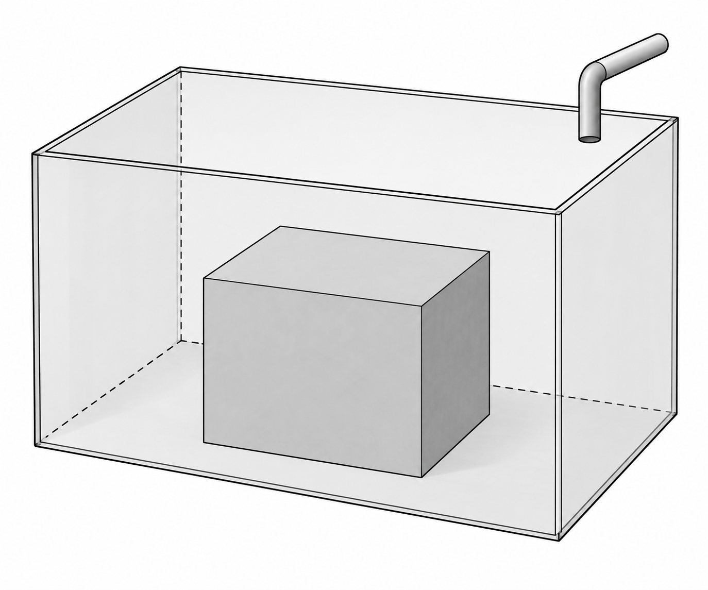

2026-10-09 · 출제 잠금 문항 검토 · 운영 데이터 변경 없음
교과서 475문항, 교정·변형으로 출제할 수 있나?
복구 가능한 후보가 다수 확인됐습니다. 간단한 오탈자뿐 아니라 잘못 연결된 그림, 빠진 발문, 정답이 여러 개인 조건, 기존 검토의 오판까지 구분했습니다.
아래 수치는 복구 경로의 1차 분류입니다. 출제 승인 건수가 아니며 원본 HWP를 대조한 복원 완료 수치도 아닙니다.
| 복구 경로 | 문항 | 다음 처리 |
|---|---|---|
| 교정·기존 판정 재검토 | 369 | 표기·중복·배치 정리, 기존 정답 재확인 |
| 발문·조건·보기 재작성 | 61 | 명확한 새 문안 작성 후 독립 풀이 |
| 그림 추가 확인 | 45 | 기존 그림 대응 확인 또는 새 그림 제작 |
그림이 연결된 문항 234개, 연결된 그림 281개는 모두 로컬에 있습니다. 475문항에 기록된 원본 HWP 경로338개에서는 현재 로컬 파일을 찾지 못했습니다. 다른 위치에 원본이 없다는 뜻은 아닙니다.
기존 검토사유도 다시 확인해야 합니다
반지름4cm인 캔이3×2로 붙어 있을 때 직선 부분은16×2+8×2=48cm, 둥근 부분의 합은8πcm입니다. 기존 검토의80+8π는 외접 직사각형 길이를 잘못 사용한 계산입니다. 정답을 바꾸지 않고 해설을 보완하는 후보입니다.
번호가 없다고 잠긴 회전체 문제(J10703-A33-001)도 실제 그림에는①~⑤ 번호가 들어 있습니다. 원문·그림 확인 없이 잠금 사유만 일괄 치환하면 정상 문항까지 바꿀 수 있습니다.
독립 검산한 수정안 6개
HC20311-A04-001 · 실수 a,b에 대해 a>3 조건을 추가
새 조건이 없으면 (a,b)=(2,6),(4,6)이 모두 성립하여 합이8 또는10이다.
정답 ④ 10
x≥1에서 치역은 (−∞,2]이므로 x<1인 부분은 정확히 (2,4)를 채워야 한다. (ax−b)/(x−2)=a+(2a−b)/(x−2)의 두 끝 극한은 a, b−a이다. 따라서 {a,b−a}={2,4}. 새 조건 a>3에 따라 a=4, b=6, 합은10이다.
검증: 범위와 단조성에 의한 일반 증명. 추가 조건이 수식 위에 표시되는지 출력 확인 필요.
HC20209-A08-001 · 발문을 부정과 동치인 조건으로 한정하고 ⑤를 논리합으로 명시
원래 발문의 단순 필요조건 질문에는④도 참이다.
정답 ⑤
실수의 제곱은 음수가 아니므로 p는 x=y=z와 동치이다. 그 부정은 세 수가 모두 같지는 않다는 뜻이며⑤이다. ④는 x=y=z=1일 때 참이지만 부정은 거짓이므로 동치가 아니다.
검증: 제곱합 일반 증명과125개 정수 삼중쌍 보조 대조.
HC10226-A06-001 · 이차다항식으로 용어 교정, 빠진⑤를 독립 풀이 결과로 새 작성
기존⑤가 빠져 있으며 원래 인쇄된⑤ 내용은 확인되지 않았다.
(가) 부등식 의 해는 이다.
(나) 방정식 는 중근을 가진다.
정답 ⑤ −3
(가)로부터 P(x)+2x+3=ax(x−1), a<0이다. (나)는 ax²+(1−a)x−1=0이며 판별식은(a+1)². 따라서 a=−1, P(x)=−x²−x−3, P(−1)=−3이다.
검증: 근과 부호, 판별식, 대입 결과 검산. 다섯 보기 출력 확인 필요.
HC10301-A14-001 · 본문과 해설의 두 수에 대해 양의 약수 개수를 묻는 새 발문 작성
기존 본문에 무엇을 구하는지 발문이 없다. 해설에서 추론한 새 발문이며 원본 복원으로 단정하지 않는다.
(1)
(2)
정답 (1)15개 (2)18개
144=2⁴×3²이므로(4+1)(2+1)=15개, 300=2²×3×5²이므로(2+1)(1+1)(2+1)=18개이다.
검증: 약수 직접 열거와 소인수분해 공식 일치.
HC20312-A03-001 · 정의역 x>0 및 항등적 동치를 명시하고 깨진②를 새 오답으로 작성
②의 근호 표기가 깨졌다. 새②는 원본 보기 복원이라고 주장하지 않는다.
정답 ⑤
통분하면 분자는2, 분모는(√(x+1)−1)(√(x+1)+1)=x이므로2/x이다. x>0에서 원식과 모든 보기가 정의된다.
검증: 통분 항등식 증명. x=9만으로도 다른 네 후보가 항등식이 아님을 확인할 수 있다.
HAL0206-A03-001 · 설명에서 기본 주기를1시간으로 명시
기존 설명이2시간 주기라고 되어 있으나 주어진 식의 기본 주기는1시간이다.
정답 ⑤ 24
16=B−k/12, 20=B+k/12이므로4=k/6, k=24이고 B=18이다. 기본 주기는2π/(π/30)=60분이다.
검증: 두 관측 시각 대입, 양수 조건과 기본 주기 확인.
새 그림을 사용한 변형 예시

그림과 같이 안쪽 밑면의 넓이가 100cm²이고 높이가 20cm인 직육면체 모양의 물통이 있다. 밑면의 넓이가 40cm²이고 높이가 10cm인 속이 찬 직육면체 기둥이 물통 바닥에 고정되어 있다. 기둥의 옆면과 물통의 벽 사이에는 물이 들어갈 공간이 있다. 처음에 물이 없는 이 물통에 매초 30cm³의 물을 일정하게 넣는다. 물이 새거나 기둥에 흡수되지 않을 때, 30초 후 물의 높이는 물통 바닥에서 몇 cm인가? (그림은 모식도이다.)
정답 ③ 13cm
물이 기둥의 윗면 높이인 10cm에 이르기까지 필요한 부피는 (100−40)×10=600cm³이고, 걸리는 시간은 600÷30=20초이다. 이후 10초 동안 300cm³가 더 들어오며, 이때 물이 차는 단면적은 100cm²이므로 높이가 3cm 더 올라간다. 따라서 높이는 13cm이다.
적용 기준과 검토 자료
교정한 내용도 정답·해설과 인쇄 결과를 다시 확인합니다. 조건이나 보기를 바꾼 문항은 새 식별자와 원본 참조를 갖도록 하고, 생성 그림의 점·각·길이·축·보기 번호를 따로 검수합니다. 이번 검토에서는 운영 DB와 출제 잠금을 변경하지 않았습니다.
대표 수학·정답 검산9개와 수식26개 렌더링 점검을 통과했습니다. 이 검증은475문항 전체의 수학적 승인 검사가 아닙니다.
475문항별 분류표 · 분류 JSON · 수정 문안·풀이 · 그림 검토 · 검산 기록 · 그림 생성 프롬프트